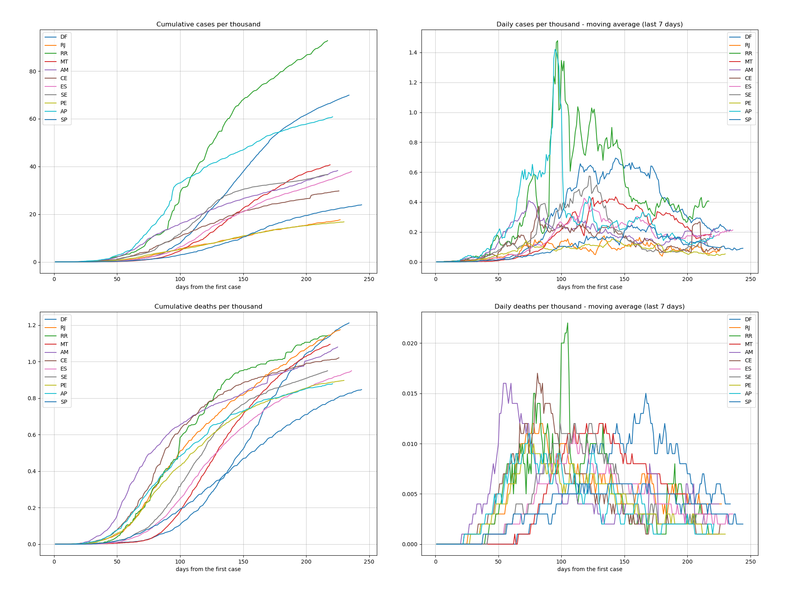
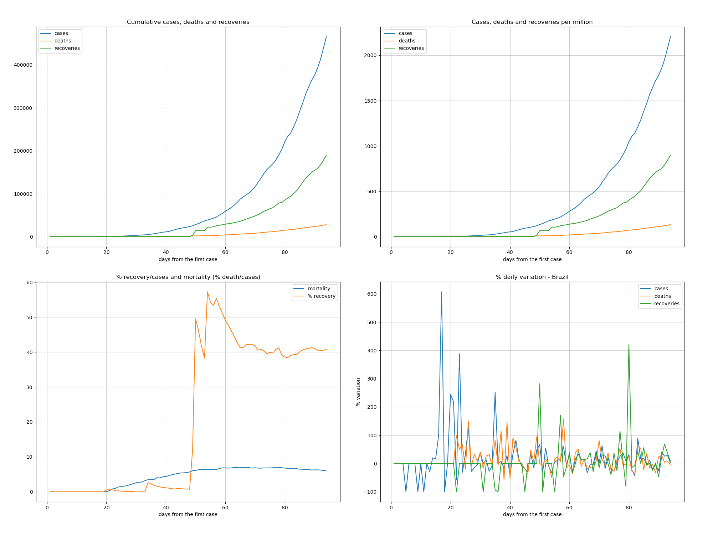

These analysis are related to Brazil Convid19 pandemic data up to 06/01/2020.
This information is for own use only and shall NOT be used for medical and public policy guidances.
| 25/05/2020 | 01/06/2020 | variations | |
|---|---|---|---|
| cases | 374898 | 526447 | 151549 (40%) |
| deaths | 23473 | 29937 | 6464 (27%) |
Move the mouse over the map for each region details.
Move the mouse over the map for each region details.
This ranking is made from the total of deaths per each thousand of population of each state.
| state | date | day | population | case_day | cases | death_day | deaths | cases_thousand | deaths_thousand | perc_death | |
|---|---|---|---|---|---|---|---|---|---|---|---|
| 1 | AM | 2020-06-01 | 79 | 4144597, | 396 | 41774 | 19 | 2071 | 10,079 | 0,500 | 4,96 |
| 2 | CE | 2020-06-01 | 77 | 9132078, | 2015 | 50504 | 178 | 3188 | 5,530 | 0,349 | 6,31 |
| 3 | PA | 2020-06-01 | 75 | 8602865, | 85 | 38046 | 2 | 2925 | 4,422 | 0,340 | 7,69 |
| 4 | RJ | 2020-06-01 | 89 | 17264943, | 1142 | 54530 | 118 | 5462 | 3,158 | 0,316 | 10,02 |
| 5 | PE | 2020-06-01 | 82 | 9557071, | 450 | 34900 | 68 | 2875 | 3,652 | 0,301 | 8,24 |
| 6 | AP | 2020-06-01 | 74 | 845731, | 288 | 9890 | 6 | 228 | 11,694 | 0,270 | 2,31 |
| 7 | RR | 2020-06-01 | 72 | 605761, | 218 | 3692 | 0 | 116 | 6,095 | 0,191 | 3,14 |
| 8 | AC | 2020-06-01 | 75 | 881935, | 107 | 6326 | 13 | 161 | 7,173 | 0,183 | 2,55 |
| 9 | SP | 2020-06-01 | 97 | 45919049, | 1598 | 111296 | 52 | 7667 | 2,424 | 0,167 | 6,89 |
| 10 | ES | 2020-06-01 | 88 | 4018650, | 379 | 14069 | 10 | 614 | 3,501 | 0,153 | 4,36 |
This ranking is made from the total of cases per each thousand of population of each state.
| state | date | day | population | case_day | cases | death_day | deaths | cases_thousand | deaths_thousand | perc_death | |
|---|---|---|---|---|---|---|---|---|---|---|---|
| 1 | AP | 2020-06-01 | 74 | 845731, | 288 | 9890 | 6 | 228 | 11,694 | 0,270 | 2,31 |
| 2 | AM | 2020-06-01 | 79 | 4144597, | 396 | 41774 | 19 | 2071 | 10,079 | 0,500 | 4,96 |
| 3 | AC | 2020-06-01 | 75 | 881935, | 107 | 6326 | 13 | 161 | 7,173 | 0,183 | 2,55 |
| 4 | RR | 2020-06-01 | 72 | 605761, | 218 | 3692 | 0 | 116 | 6,095 | 0,191 | 3,14 |
| 5 | CE | 2020-06-01 | 77 | 9132078, | 2015 | 50504 | 178 | 3188 | 5,530 | 0,349 | 6,31 |
| 6 | MA | 2020-06-01 | 73 | 7075181, | 658 | 35297 | 21 | 976 | 4,989 | 0,138 | 2,77 |
| 7 | PA | 2020-06-01 | 75 | 8602865, | 85 | 38046 | 2 | 2925 | 4,422 | 0,340 | 7,69 |
| 8 | PE | 2020-06-01 | 82 | 9557071, | 450 | 34900 | 68 | 2875 | 3,652 | 0,301 | 8,24 |
| 9 | ES | 2020-06-01 | 88 | 4018650, | 379 | 14069 | 10 | 614 | 3,501 | 0,153 | 4,36 |
| 10 | DF | 2020-06-01 | 87 | 3015268, | 730 | 10510 | 1 | 171 | 3,486 | 0,057 | 1,63 |

